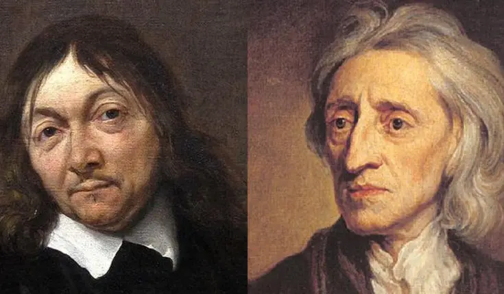
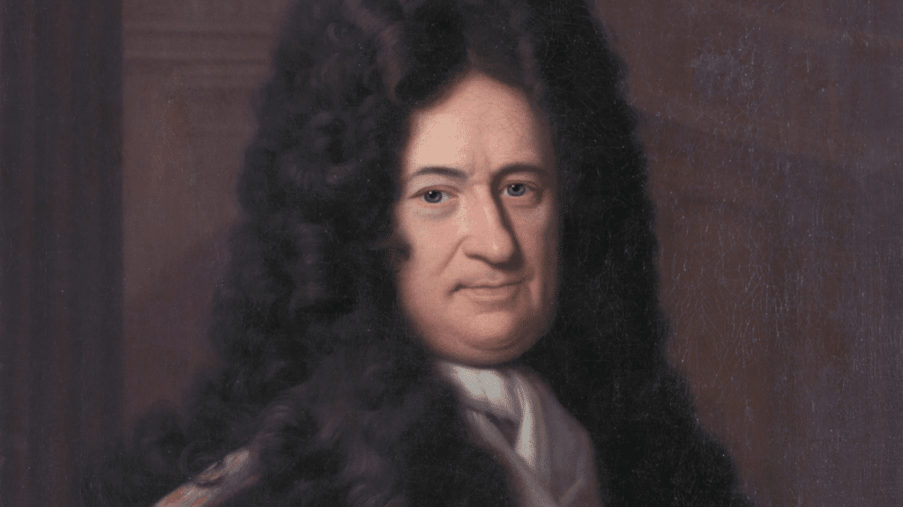
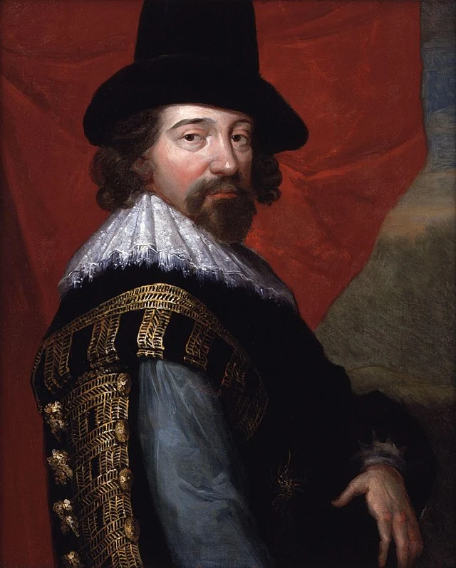

Gnose
Fonte: SYMPLA
René Descartes (1596-1650) e John Locke (1632-1704)
Fonte: Ex-Isto
Racionalismo e Mente Humana.
Fonte: Universo Racionalista.
René Descartes - (1596-1650)
Fonte: Kuadros.
Gottfried Leibniz - (1646-1716).
Fonte: Ex-Isto.
Características do Empirismo

Fonte: Santo Angelo.
Francis Bacon - (1561-1626)
Fonte: Toda Matéria.
John Locke - (1632-1704)
Fonte: Toda Matéria
Immanuel Kant - (1724-1804)
Fonte: Toda Matéria